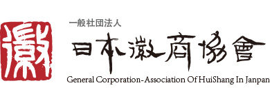

🌸 みんなの日中交流会
← トップへ
在日中国同郷会・総商会リンク集
在日各省同乡会 / 总商会官方网站汇总
全国
全日本华侨华人社団联合会
日本中華總商会
东北
在日黒龍江省同郷会
西日本大連総商会
华北
日本天津総商会
日本山西同乡会
华东
在日山東同郷会
日本上海同乡会
日本江苏总商会

日本徽商協会
日本江西総商会
日本浙江総商会
日本温州同郷会
日本福建省総商会
日本福建長楽同郷会
华中
日本河南同郷会
日本湖南人会
日本湖南同乡会
华南
廣東同郷會
日本广西同乡会
日本海南同乡会
西南
日本川渝総商会
在日四川同乡会
日本贵州总商会
日本雲南聯誼協会
西北
日本陝西総商会
注：
北京・吉林・遼寧・黒龍江（一部）など多くの省市の同郷会は、独立した公式ウェブサイトを持たず WeChat 公式アカウントを中心に運営しているため、このリストには含まれていません。情報の追加・修正は
みんなの日中交流会
までお知らせください。